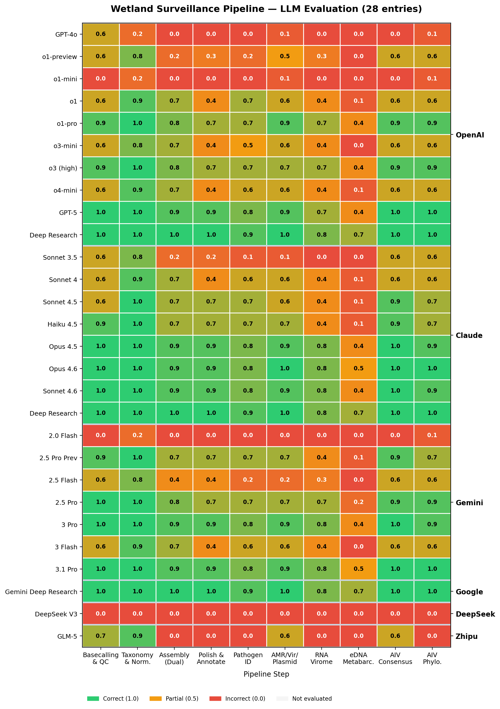
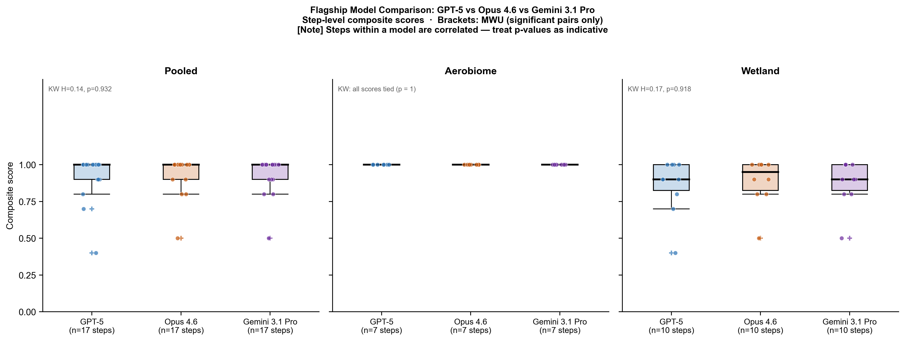

I build production ML for regulated industries, evaluate frontier LLMs across 28 models, and develop genomics pipelines published in Nature Communications. PhD from Helmholtz Munich & TU Munich.
Nanopore sequencing workflows for pathogen surveillance across air, water, food, and clinical settings. Founding member of an international research group spanning 7 sites. These peer-reviewed pipelines also serve as the validated ground truth for the LLM evaluation below.
Long-read metagenomic characterization of bioaerosols. Published in ISME Communications (2024). Complete Snakemake pipeline for Oxford Nanopore data.
Multi-site surveillance integrating DNA metagenomics, RNA viromics, AIV whole-genome sequencing, and eDNA metabarcoding across 12 wetlands in 3 countries. Published in AEM (2025).
Real-time metagenomic framework for Listeria monocytogenes surveillance in food production environments using Oxford Nanopore adaptive sampling.
The genomics pipelines above became ground truth for a question: can frontier LLMs actually build scientific workflows, or do they just produce code that looks right?
A structured benchmark testing whether frontier LLMs can build real scientific workflows — not just produce locally plausible code. The dominant failure mode: code that runs, looks reasonable, and would pass surface-level review, but makes domain-specific choices an expert would immediately reject.


Production ML for medical underwriting, interactive clinical tools, and AI deployment strategy — built alongside the PhD.
Survival analysis and transformer-based patient trajectory prediction on synthetic FHIR/OMOP records. Cox PH, DeepSurv, DeepHit, Dynamic-DeepHit, SurvTRACE. Two clinical tracks: CVD and Type 2 diabetes.
D3.js browser dashboard for disease-state transitions and intervention scenarios. Eight interconnected disease nodes, evidence-linked uncertainty bands, patient profile controls. Zero build step.
Browser-based catalogue of ML and actuarial methods for German private health insurance. Includes an agentic AI orchestration layer for multi-step underwriting workflows.
Open-source CLI tool for organisations evaluating AI deployment. 25 questions across five dimensions, weighted scoring, maturity tier assignment, sector benchmarks, and prioritised recommendations.
Cost modeling for LLM deployment decisions. Pricing database for 13 models, Monte Carlo sensitivity analysis, ROI calculator comparing manual vs LLM-augmented workflows.
AI Deployment Due Diligence & AI Academy for knowledge-intensive organisations. Vendor-neutral. EU AI Act-aligned. Munich.
Launching late 2026. If your organisation is evaluating where AI fits — and where it doesn't — I'd like to hear from you.
Get in touch →I am open to collaborations in LLM evaluation, AI governance for regulated industries, and metagenomics.